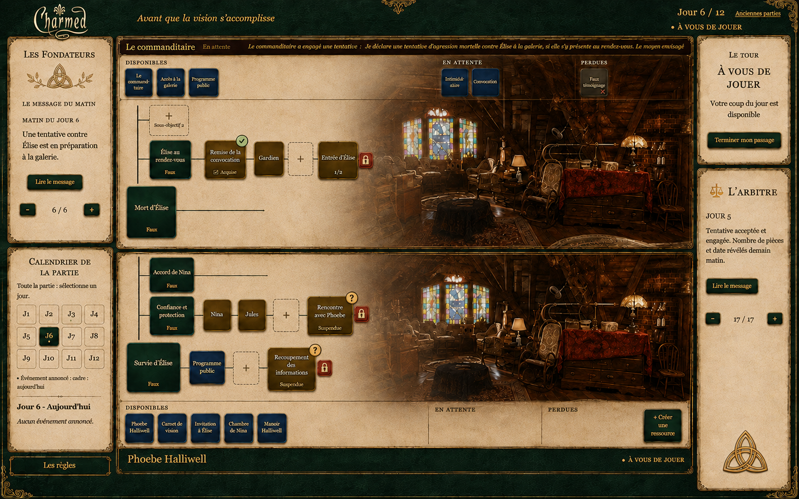
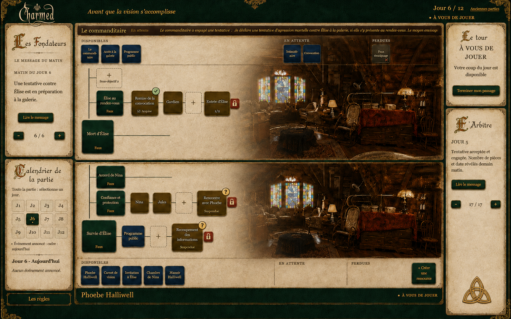

A — Motif des FondateursTitres sobres et triquetra végétale sous Les Fondateurs.Ouvrir A en grand ↗
B — Titres du Livre des OmbresLettrines travaillées pour les titres, texte courant lisible.Ouvrir B en grand ↗